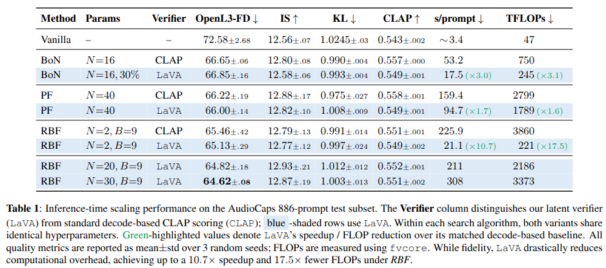
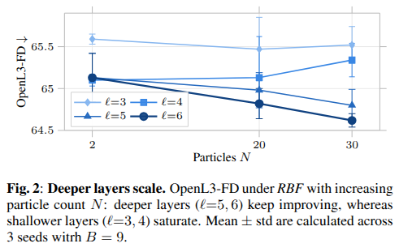
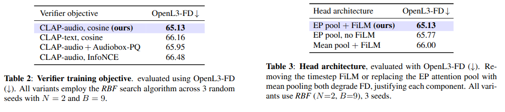

Abstract
Inference-time scaling improves diffusion without retraining: search algorithms sample multiple noise particles and use a verifier during denoising to steer sampling toward high-reward outputs. Standard methods decode every candidate and score with an external verifier, making repeated evaluation the main computational bottleneck. We introduce a latent-space verifier: a lightweight head attached to an intermediate layer of the frozen generator that predicts reward embeddings directly from noisy latents, eliminating decoding and enabling efficient per-step scoring. Across Best-of-N, Particle Filtering, and Rollover Budget Forcing search on the text-to-audio model TangoFlux, our verifier achieves up to 10.7× speedup while matching the OpenL3-FD of decode-based CLAP rewards. Starting from the original TangoFlux baseline without inference-time scaling 72.58, our approach reduces OpenL3-FD on AudioCaps to 64.62 by reinvesting the compute saved from latent-space verification into additional particles. Our scoring head uses 4.8M parameters, 14× fewer than the 68.6M-parameter CLAP audio encoder..
Decoding is the bottleneck! 🐌
Inference-time scaling buys quality by searching over candidates instead of denoising longer. But scoring a candidate is expensive: it must be fully denoised, decoded into a waveform, and passed through an external reward model, and per-step methods repeat all of that at every denoising step. In audio, both existing inference-time-scaling works decode every candidate before scoring it.
Score the latent, forward the winner, skip the decoder! ⏭️
The frozen generator already carries the semantics needed to judge a candidate. Rather than decode and call an external model, we predict the reward directly from the noisy latent with a lightweight head attached to an intermediate layer.
Findings 🔬
Because the head regresses the CLAP-audio embedding of the clean sample, scoring its prediction against the prompt's CLAP-text embedding approximates the decode-based CLAP reward without ever producing a waveform. Verification is decoupled from denoising, so the compute that standard search pours into candidates it will discard is simply never spent. Search gets dramatically cheaper at no cost in audio fidelity.

Our Method 🧠
A 4.8M-parameter head on a frozen TangoFlux, made of three parts:
1️⃣ Efficient Probing attention pool, 32 learnable queries over the 645 temporal frames
2️⃣ AdaLN-FiLM conditioning on the sampling step, so one head scores latents at any noise level
3️⃣ Linear–GELU–Linear MLP into a 512-D ℓ2-normalized embedding
🔥 Trained on AudioCaps to match the clip's clean 512-D CLAP-audio embedding under a cosine loss.
Where it plugs in 🔍
LaVA replaces the verifier, not the search algorithm, so it drops into existing methods unchanged. What it saves depends on what each method spends its compute on.
Best-of-N Early Selection
With N = 16, candidates no longer need to be finished before they can be judged. We denoise them to just 30% of the trajectory, rank them in latent space, and let only the winner run to completion and reach the decoder. Fidelity is on par with scoring fully denoised candidates (66.85 vs 66.65 OpenL3-FD) at 3.0× lower wall-clock and 3.1× fewer FLOPs.
Decode-Free Particle Filtering
Particle filtering keeps N = 40 particles denoising in parallel, scoring them every 5 steps after a warmup and resampling toward high-reward trajectories. Every particle advances at every step whether or not it scores well, so there is no forward pass to save here; what LaVA removes is the decoding. That alone is worth 1.7×, at a slightly better FD than the decode-based verifier (66.00 vs 66.22).
Super-Efficient Rollover Budget Forcing
This is where the design pays off. RBF proposes up to B = 9 stochastic next states per particle at every denoising step, and scoring each one the standard way costs a full model forward just to obtain its Tweedie estimate, then a decode. LaVA scores every proposal from a single partial forward and defers the expensive full computation to the one particle that gets accepted, giving 10.7× lower wall-clock and 17.5× fewer FLOPs at matched fidelity. Cheap enough that the freed compute buys wider populations: N = 20 and N = 30 reach 64.82 and 64.62, below anything decode-based search reaches at any budget we could run.
Listen 🔊
"A man speaks with others speaking in the distance and traffic passing with a few horns honking.
Vanilla TangoFlux
RBF + LaVA
"A bell ticks with a thumping noise."
Vanilla TangoFlux
RBF + LaVA
"While music plays in the background, a frog croaks, young females speak and laugh, and a young male speaks."
Vanilla TangoFlux
RBF + LaVA
"A train running on railroad tracks followed by a lawn mower engine running then a steam engine whistle blowing as a crowd of people are talking in the background."
Vanilla TangoFlux
RBF + LaVA
"A low loud hum gets lower followed by an explosion."
Vanilla TangoFlux
RBF + LaVA
"A baby cries and a young child speaks."
Vanilla TangoFlux
RBF + LaVA
"Hog snorting with male screaming."
Vanilla TangoFlux
RBF + LaVA
"Women talk while food fries."
Vanilla TangoFlux
RBF + LaVA
"Ocean waves crashing as wind blows into a microphone."
Vanilla TangoFlux
RBF + LaVA
"A faucet pouring water as water fills a container followed by scrubbing on a plastic surface and water splashing."
Vanilla TangoFlux
RBF + LaVA
"A person is snoring steadily."
Vanilla TangoFlux
RBF + LaVA
"A dog barks and rustles with some clicking."
Vanilla TangoFlux
RBF + LaVA
Deeper layers scale 📈
At N = 2 the layer choice barely matters, with ℓ = 4, 5, 6 all around 65.1. The layers separate as search widens: at N = 30 the deeper taps keep improving to 64.80 and 64.62 while shallower ones plateau above 65.3. Deeper single-stream blocks have absorbed more text conditioning through the preceding cross-attention layers, and they are steadier too, narrowing to ±0.08 against up to ±0.49 at shallower layers.

OpenL3-FD under RBF with increasing particle count N. Deeper layers (ℓ = 5, 6) keep improving, whereas shallower layers (ℓ = 3, 4) saturate. Mean ± std across 3 seeds with B = 9.
Every component earns its place 🧩
Regressing the clip's own CLAP-audio embedding under a cosine loss beats retargeting to the caption's text embedding, adding an Audiobox perceptual-quality term, or swapping in a contrastive InfoNCE objective. Within the head, removing the timestep FiLM modulation costs 0.64 FD and replacing the attention pool with mean pooling costs 0.87.

Summary 🏁
LaVA shows that verification in audio inference search does not have to happen in waveform space. Predicting the CLAP-audio representation straight from intermediate noisy latents makes inference-time search cheap enough to widen, and wider search results to better audio. Since the verifier reads the latent state directly, its reward is also differentiable with respect to the generator representation, opening the door to inference-time optimization without backpropagating through a decoder.
BibTeX
@article{sgouropoulos2026lava,
author={Christos Sgouropoulos and Ioannis Kakogeorgiou and Georgios Petsangourakis and Dionisios Sotiropoulos and Theodoros Giannakopoulos},
title={LaVA: Decoding-Free Latent Verification for Efficient Text-to-Audio Inference-Time Scaling},
year={2026}
}